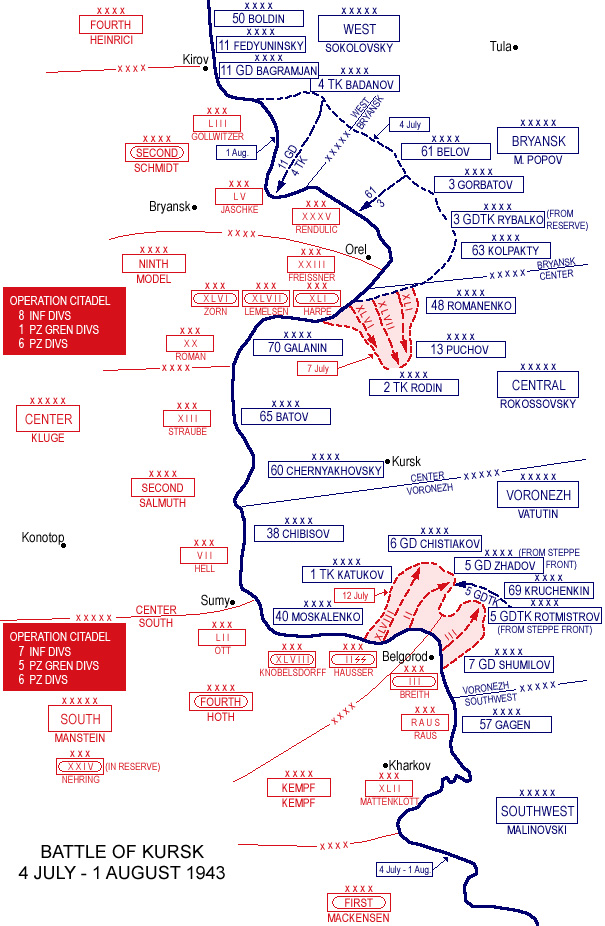

The battle of Kursk was a battle that took place on the Eastern front of the second world war, being known as the largest tank battle in all of history. the battle consists of 2 parts, the german Operation Citadel, and the battle itself.
Operation Citadel was the German offensive operation in July 1943 against Soviet forces in the Kursk salient, proposed by Generalfeldmarschall Fritz Erich Georg Eduard von Manstein during the Second World War on the Eastern Front that initiated the Battle of Kursk. The deliberate defensive operation that the Soviets implemented to repel the German offensive is referred to as the Kursk Strategic Defensive Operation. The German offensive was countered by two Soviet counter-offensives, Operation Polkovodets Rumyantsev and Operation Kutuzov. For the Germans, the battle was the final strategic offensive that they were able to launch on the Eastern Front. As the Allied invasion of Sicily began, Adolf Hitler was forced to divert troops training in France to meet the Allied threats in the Mediterranean, rather than use them as a strategic reserve for the Eastern Front. Germany's extensive loss of men and tanks during the operations ensured that the victorious Soviet Red Army enjoyed the strategic initiative for the remainder of the war. The Germans hoped to weaken the Soviet offensive potential for the summer of 1943 by cutting off a large number of forces that they anticipated would be in the Kursk salient. The Kursk salient or bulge was 250 kilometres long from north to south and 160 kilometres from east to west. The plan envisioned an envelopment by a pair of pincers breaking through the northern and southern flanks of the salient. Hitler believed that a victory here would reassert German strength and improve his prestige with his allies, who were considering withdrawing from the war. It was also hoped that large numbers of Soviet prisoners would be captured to be used as slave labour in the German armaments industry. The Soviet government had foreknowledge of the German intentions, provided in part by the British intelligence services, the intelligence transmitted by the Lucy spy ring, and Tunny intercepts. Aware months in advance that the attack would fall on the neck of the Kursk salient, the Soviets built a defence in depth designed to wear down the German armoured spearhead. The Germans delayed the offensive while they tried to build up their forces and waited for new weapons, mainly the new Panther tank but also larger numbers of the Tiger heavy tank. This gave the Red Army time to construct a series of deep defensive belts. The defensive preparations included minefields, fortifications, artillery fire zones and anti-tank strong points, which extended approximately 300 km in depth. Soviet mobile formations were moved out of the salient and a large reserve force was formed for strategic counter-offensives.
On 12 July, a heavy artillery barrage marked the launching of the offensive. The armies of the Bryansk Front and the Western Front attacked along the north and north-east flanks of the 2nd Panzer Army. The Western Front assault was led by the 11th Guards Army under Lieutenant General Hovhannes Bagramyan, supported by the 1st and 5th Tank Corps. The Soviets attacked with overwhelming numbers. Along one 16-kilometre attack sector near Ulianovo, six Soviet rifle divisions attacked two German infantry regiments. At 5–7 kilometres (3.1–4.3 mi) in depth, the German defensive lines were deeper than the Soviets expected. The Soviet spearheads sustained heavy casualties but pushed through and in some areas achieved significant penetration. The defenders were overwhelmed by the afternoon of the first day, with the 11th Guards Army advancing some 23 kilometres. The German 5th Panzer Division attempted to fill the breach but they were met by the Soviet supporting armour and were forced back. The initial attacks on the eastern face by the Bryansk Front were less successful. The 61st, 3rd, and 63rd armies advanced 8, 14 and 15 kilometres respectively. The following day the German LIII Army Corps counter-attacked and brought the Bryansk Front to a halt. The open terrain favored the longer ranged guns of the Germans. Kluge and Model had anticipated the Soviet attack and were quick to transfer units from the Kursk area to reinforce the defenders. Their timely arrival helped check the Soviet advance. Farther north the 11th Guards Army was forcing its way through the German defences. The Germans lacked the reserves to block these penetrations. With the danger of a breakthrough and subsequent encirclement of their forces, the situation soon became serious for the 2nd Panzer Army. Army Group Centre transferred command of the 2nd Panzer Army to Model by the end of the second day. As Model was already commanding the German 9th Army making the north portion of the Kursk attack, the command transfer meant he was now in command of all German units in the Orel area.